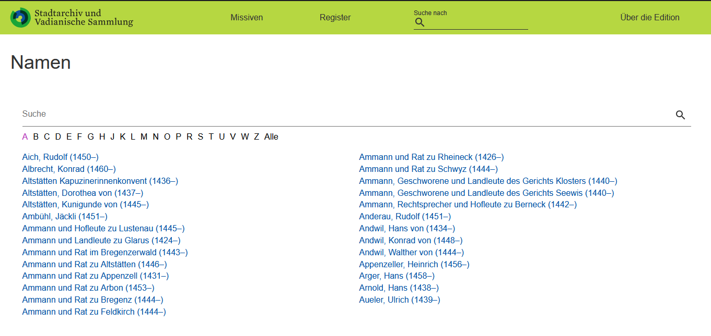
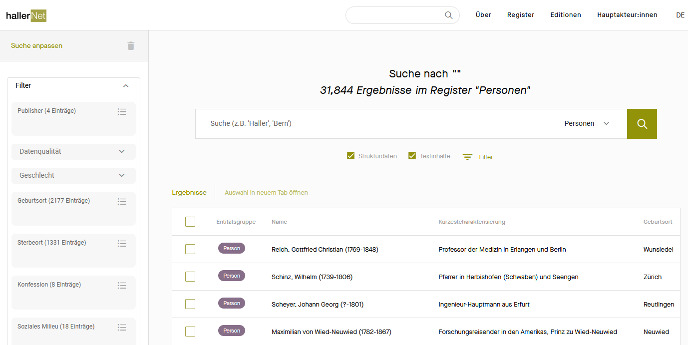
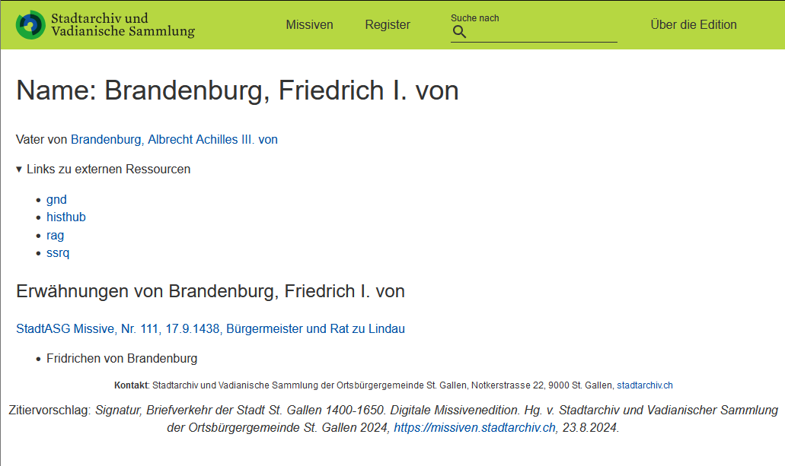
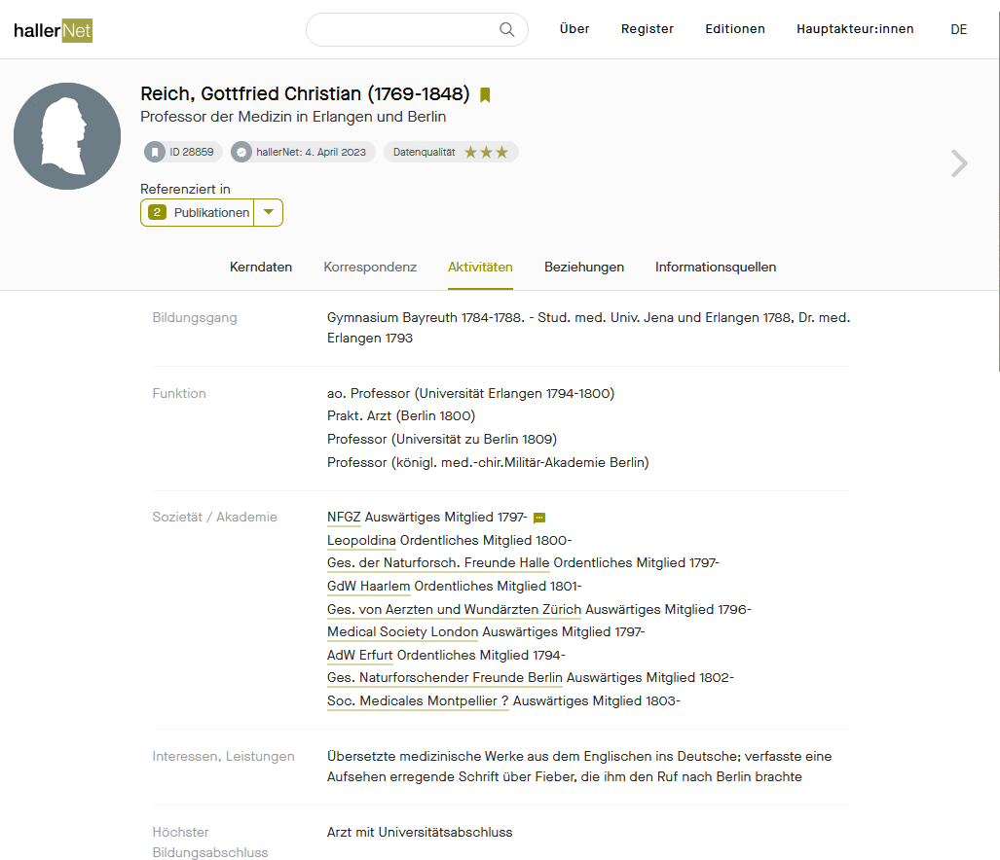

3.1 Einstiege: Seiten, Suchen und Register
Die Form des Einstiegs ist abhängig vom intendierten Publikum, dass die DSE ansprechen (oder implizit eben gerade nicht ansprechen) möchte. Innerhalb von DSE-Projekten gibt es zuweilen rege Diskussionen, wie stark der Zugang zur Edition strukturiert werden soll, insbesondere ob der Einstieg zunächst eine Einführung in die Benutzung der Edition und/oder ihr Thema bereithält, bevor Texte oder andere Medien zugänglich gemacht werden, oder ob verschiedene Zugänge möglichst intuitiv und schnell vorgelegt werden.
Wir bevorzugen niederschwellige Formen des Einstiegs und versuchen solche im Folgenden anhand von konkreten Beispielen zu evaluieren. Wir sprechen 'vorgelagerten' Einführungen nicht ihre Berechtigung ab, zumal diese der Niederschwelligkeit dienen können; z.B. waren in älteren DSE für viele Nutzende heute selbstverständliche Funktionen noch erklärungsbedürftig. Niederschwellig bedeutet zudem nicht , dass bereits auf der Einstiegsseite (s.u.) alle Zugänge zur Edition gelegt sind, dies kann auch unübersichtlich wirken und den Einstieg erschweren. Neben verschiedenen Formen von Einstiegsseiten sind verschiedene Suchfunktionen und Register für den Zugang zu den edierten Texten zentral, weshalb sie ebenfalls im Folgenden behandelt werden.
Einstiegsseiten
Es lassen sich zwei grundsätzliche Konzepte von Einstiegsseiten unterscheiden:
- Einstiege in das edierte Material, d.h. der Zugang zu verschiedenen Ressourcen und Registern ist vorrangig und der Weg zu ihnen unmittelbar sichtbar.
Beispielhafte DSE: Standard Einstiegsseite in die DSE
Das Standard-Beispiel ist die Hauptseite des TEI Publishers, die alle Texte in alphabetischer bzw. numerischer Reihenfolge aufführt.
-
Z.B. lässt sich nach einer sehr einfachen Einstiegsseite, die das Projekt kurz umreisst, in der Coseriu-Edition auf der Hauptseite ein Überblick über alle Texte finden, was angesichts des eher kleinen Korrespondenz-Volumens einleuchtet. Ähnlich verfährt die St. Gallter Missiven-Edition .
-
Die Einstiegsseite der Escher Briefedition ist etwas komplexer, bleibt aber übersichtlich und erlaubt ebenfalls den Zugang zur Textauswahl mit einem Klick.
Typisch für viele Editionen im TEI-Publisher ist, dass das Suchfeld und die Register-Menü (z.T. als 'Kontexte') ab der Einstiegsseite immer sichtbar sind.
- Einstiege in das Projekt, d.h. die Beschreibung des Projektrahmens, der Benutzung und ggfls. der Zugang zur Dokumentation ist vor- oder gleichrangig. Der Weg zum edierten Text wird oft erst durch eine Lektüre der Einstiegsseite klar und/oder verläuft über mehrere Unterseiten.
Beispielhafte DSE: Einstiege in das Projekt
Insbesondere wenn eine Edition erst wenige edierte Dokumente aufweist, kann ein Einstieg ins Projekt von Anfang an klären, dass es sich um ein unabgeschlossenes 'work in progress' handelt. Auch ein Edition von sehr spezialisierten, komplex aufgebauten Beständen, die z.B. die Funktion eines digitalen Archivs haben, kann einen ausführlichen Einstieg rechtfertigen.
-
Ein Beispiel hierfür ist das Niklas Luhmann Archiv , dessen Kern eine Edition der Zettelkasten und der Arbeits-Typoskripte bzw. Manuskripte des Wissenschaftlers ausmachen. Da es damit selbst bereits komplex angelegte analoge Arbeitswerkzeuge ins Digitale zu übersetzen galt, weist die Edition Lesewege und Tutorials auf, die mit dem Editionstext selbst mindestens gleichwertig präsentiert werden.
-
Für extensive Einstiege gibt es Beispiele im TEI Publisher, etwa Louis Ginzbergs "Legende der Juden" , das zwei Hauptseiten ("About the Edition" und "Edition") umfasst und die 'About'-Seite zuerst zeigt.
In beiden Szenarien sollte den Nutzenden schnell klar werden, um was für eine Edition es sich handelt und wer sie gemacht hat. Bei der Entwicklung von spezifischem Webdesign sollte auf Einfachheit und gute Verständlichkeit bei der Einstiegsseite geachtet werden sollte. Hierdurch wird maßgeblich die Barrierefreiheit, auf die wir in diesem Handbuch genauer eingehen, unterstützt.
Die Einstiegsseite des TEI-Publisher lässt sich konfigurieren, wie in der [TEI Publisher-Dokumentation] detailliert beschrieben wird. => @Reto Ich habe die entsprechende Dokumentation noch nicht gefunden.
Die Showcase-Edition stellt ihre - weitgehend den Standard-Einstellungen entsprechende - Einstiegsseite auch als Quellcode zu Verfügung: => Hier Verlinkung auf Github, wenn wir soweit sind.
Suchfunktionen
Je komplexer die Edition, desto mehr Suchfunktionen sind sinnvoll. Neben der Hauptfunktion - der Volltextsuche im edierten Text - kann die gezielte Suche in den Kommentaren, Registern oder Bibliographien sinnvoll sein. Eine vorbildhafte Auswahl bietet die edition-humboldt. Wo kaum Kommentare zum Einsatz kommen und Register sich einfach in kurzer Zeit durchgehen lassen, sind diese Funktionen jedoch nicht nötig.
Register und Karten
Neben einer Liste der Dokumente und der Suchfunktion stellen Register den wichtigsten Zugang zur Edition dar. Wie bereits im Zusammenhang mit der inhaltlichen Annotation gesehen, sind die üblichsten Register diejenigen für Personen, Schlagworte und Orte. Letztere Register können mit Karten ergänzt werden, die auch eine graphische Zuordnung bzw. Auffindbarkeit der Ortsdaten erlaubt.
Beispielhafte DSE: Einfache Register
Einfache Register sind in der Regel alphabetisch nach Eintrag (Ortsnamen, Nachname einer Person etc.) geordnet, dies gilt auch für die Standard Register im TEI-Publisher (unten das Beispiel der Namensregister der St.Galler Missiven Edition).

Beispielhafte DSE: Komplexere Register
Komplexere Register wie dasjenige von hallernet , die nicht mit Standard-Tools erstellt sind, erlauben auch dynamische Anpassungen der Reihenfolge, etwa in dem Personeneinträge auch nach Geburtsort und Sterbeort geordnet werden können. hallernet betont die Vernetzung ihrer Datenbestände und hat den Charakter einer Forschungsdatenbank, deshalb sind auch auf der Einstiegsseite die unterschiedlichen Register im Vordergrund.

Beispielhafte DSE: Einfacher Registereintrag
Jeder Registereintrag ist mit einer spezifischen Registerseite verknüpft. Diese kann wie das Register selbst unterschiedlich komplex ausgestaltet sein; im Standard-Fall (die auch für den TEI Publisher gilt) sind auf einer Registerseite alle Vorkommnisse des Eintrags in der Edition sowie eine Verlinkung zu Ressourcen und Normdaten-Einträgen außerhalb der Edition aufgeführt (unten das Beispiel einer Namensregister-Seite der Missiven-Edition).

Beispielhafte DSE: Komplexer Registereintrag
Wo wie in hallernet die Datenbank-Struktur zentral ist, können Registerseiten auch mit weiteren Informationen zur Entität angereichert sein, im Falle einer Person z.B. Metadaten über Publikationen oder beruflichen Funktionen. Solche 'haute-couture'-Lösungen benötigen eine komplexe Datenbank im Hintergrund und entsprechendes technisches Know-How über die Erstellung und Wartung von Datenbanken.

Zeitstrahl
Zwar gehören auch Zeitdaten zur Standard-Kategorie der inhaltlichen Auszeichnung, diese werden in der Regel jedoch nicht als Register, sondern als Zeitstrahl dargestellt. Der TEI Publisher erlaubt es, diesen Zeitstrahl auf der Hauptseite einzublenden. Von dieser Lösung macht z.B. die St. Galler Missiven-Edition Gebrauch.